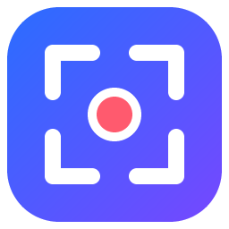

Capture
Vidéo
14
18
22
28
36
48
64
96
Copier
Enregistrer
Texte
Ouvrir avec le lecteur
Afficher dans le dossier

Captur
Capturez une zone, une fenêtre ou tout l'écran, annotez, puis copiez ou enregistrez.
Capture d'écran
Enregistrer une vidéo
Réglages
Copier automatiquement chaque capture
Vidéo : son de l'ordinateur
Vidéo : micro
Raccourcis
Dossier des captures
Texte trouvé dans l'image
Copier
Fermer